# Import packages
# 加载包
library(tidyverse)
library(magrittr)
library(lubridate)
library(tidytuesdayR)
library(knitr)
# Download data
# 下载数据
data <- tt_load('2026-03-17')
# View description
# 查看说明
readme(data)
# Extract mortality and loss data
# 提取死亡、损失数据
mortality <- data$monthly_mortality_data
loss <- data$monthly_losses_data
# Alternatively, import already downloaded data
# 也可以导入已下载数据
# mortality <- read_csv('monthly_mortality_data.csv')
# loss <- read_csv('monthly_losses_data.csv')Salmonid Mortality Report(鲑鱼类死亡报告)
About the data(关于数据)
The “Salmon Mortality Data” comes from the salmon mortality dataset published by the Norwegian Veterinary Institute
There are two datasets: the monthly mortality data, and the monthly losses data, covering the period from January 2020 to December 2025
For the monthly mortality rate data, even for the same location, data are collected at different times and from different monitoring points, so the dataset includes median mortality rates and upper/lower quartiles
After analyzing the data, three questions are addressed:
1) What is the trend in monthly mortality rates?
2) Which regions have lower mortality rates, and which have higher ones?
3) Besides fish mortality, what other types of losses may have a significant impact?
“鲑鱼类死亡数据”来自挪威兽医学会发布的鲑鱼类死亡数据集
这里有两个数据集：每月死亡率数据、每月损失数据，持续时间从2020年1月至2025年12月
其中每月死亡率数据，即使是同一个地点，也会通过不同时间和不同监测点采集数据，故数据集中的死亡率存在中位数、上/下四分位数
分析数据后解答三个问题：
1）月度死亡率呈现什么趋势？
2）哪个地区的死亡率较低，而哪些较高？
3）除了鱼类死亡外，还有哪些类型的损失可能带来重大影响？
Import Data(导入数据)
Quick Data Inspection(快速查看数据)
Conduct analysis in the order of whole to part, macro to micro, and overview to detail
从整体再到局部、从宏观再到微观、从概况再到细节的次序进行分析
# Monthly mortality data: factorize species and region fields
# 月度死亡率数据：物种和区域字段因子化
mortality %<>%
mutate(species=factor(species),
geo_group=factor(geo_group),
region=factor(region))
# View first 5 and last 5 rows of data
# 查看前5行和后5行数据
mortality %>%
head(n=5) %>%
bind_rows(mortality %>% tail(n=5)) %>%
kable()| species | date | geo_group | region | median | q1 | q3 |
|---|---|---|---|---|---|---|
| rainbowtrout | 2020-01-01 | area | 4 | 0.63 | 0.34 | 1.00 |
| rainbowtrout | 2020-02-01 | area | 4 | 0.60 | 0.41 | 1.17 |
| rainbowtrout | 2020-03-01 | area | 4 | 0.74 | 0.40 | 1.64 |
| rainbowtrout | 2020-04-01 | area | 4 | 0.51 | 0.19 | 1.59 |
| rainbowtrout | 2020-05-01 | area | 4 | 0.49 | 0.25 | 1.56 |
| salmon | 2025-08-01 | county | Finnmark | 0.30 | 0.17 | 0.55 |
| salmon | 2025-09-01 | county | Finnmark | 0.37 | 0.27 | 0.57 |
| salmon | 2025-10-01 | county | Finnmark | 0.43 | 0.23 | 0.86 |
| salmon | 2025-11-01 | county | Finnmark | 0.32 | 0.19 | 0.48 |
| salmon | 2025-12-01 | county | Finnmark | 0.37 | 0.23 | 0.75 |
# summary the data
# 查看数据范围
options(width = 150)
summary(mortality) species date geo_group region median q1 q3
rainbowtrout: 420 Min. :2020-01-01 area :996 4 : 144 Min. :0.1400 Min. :0.0800 Min. : 0.240
salmon :1368 1st Qu.:2021-07-01 country:144 Norge : 144 1st Qu.:0.4475 1st Qu.:0.2200 1st Qu.: 0.880
Median :2023-01-01 county :648 1 & 2 : 72 Median :0.5900 Median :0.2900 Median : 1.220
Mean :2022-12-19 10 : 72 Mean :0.6380 Mean :0.3211 Mean : 1.344
3rd Qu.:2024-07-01 11 : 72 3rd Qu.:0.7725 3rd Qu.:0.3800 3rd Qu.: 1.640
Max. :2025-12-01 12 & 13: 72 Max. :2.8900 Max. :1.7200 Max. :11.900
(Other):1212 # Conclusions:
# Only data from Norway
# Country includes both areas and counties; there is overlap between areas and counties for
# some farms
# Most mortality rates are below 1%, but there are extreme values far above 1%
# (even up to 2.89%, 11.9%, etc.)
# 结论：
# 只有挪威一个国家的数据
# 国家既包含区域，也包含县；而区域和县存在重叠的渔场
# 大部分死亡率在1%以下，但也存在远大于1%的极端值（甚至达到2.89%、11.9%等）Country-level mortality overview(国家的死亡率概况)
# Distribution of national mortality data
# 国家死亡率数据分布
mortality %>%
filter(geo_group=='country') %>%
select(species,date,median,q1,q3) %>%
gather(key='index',value='rate',-species,-date) %>%
ggplot(aes(y=rate,x=species)) +
geom_boxplot() +
facet_wrap(~index)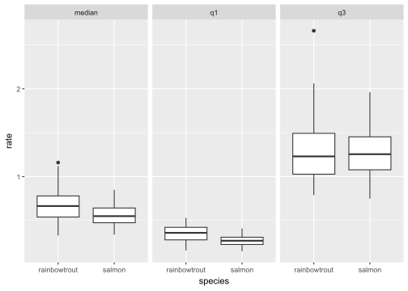
# Conclusions:
# Rainbow trout has higher mortality than salmon, and its variability is also larger,
# indicating different mortality patterns; they need to be analyzed separately
# However, the extreme high values (Q3) of the two species are not very different,
# suggesting that extreme values may be influenced by other common abnormal factors
# Median range for both species: 0.5%-1.0%; Q1 range: 0-0.5%; Q3 range: 1.0%-1.5%
# 结论：
# 虹鳟的死亡率高于三文鱼，且虹鳟的波动也更大，显示两种鱼有不同的死亡模式，需分别分析
# 但两种鱼的死亡率极高值（Q3）却相差不大，有可能极高值受到其它共同的异常因素影响
# 两种鱼的中值区间在0.5%-1.0%；Q1区间0-0.5%；而Q3区间1.0%-1.5%County-level mortality overview(县的死亡率概况)
# # Observe county mortality
# 观察县的死亡率
mortality %>%
filter(geo_group=='county') %>%
select(species,date,median,q1,q3) %>%
gather(key='index',value='rate',-species,-date) %>%
ggplot(aes(y=rate,x=species)) +
geom_boxplot() +
coord_cartesian(ylim=c(NA,5)) +
facet_wrap(~index)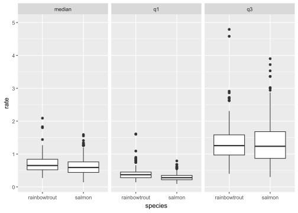
# Conclusions:
# County mortality pattern is similar to the national pattern
# However, the extreme high values (Q3) show greater variability
# (salmon even larger than rainbow trout); some counties reach 3%-17%
# 结论：
# 县的死亡率模式与国家接近
# 但县的死亡率极高值（Q3）波动率更大（三文鱼甚至大于虹鳟），个别县死亡率甚至达到3%-17%Area-level mortality overview(区域的死亡率概况)
# Observe area mortality
# 再观察区域的死亡率
mortality %>%
filter(geo_group=='area') %>%
select(species,date,median,q1,q3) %>%
gather(key='index',value='rate',-species,-date) %>%
ggplot(aes(y=rate,x=species)) +
geom_boxplot() +
coord_cartesian(ylim=c(NA,5)) +
facet_wrap(~index)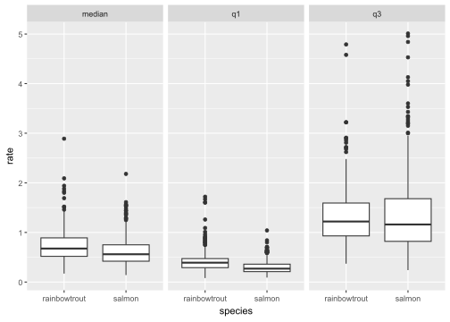
# Conclusions:
# Area mortality pattern is similar to county pattern
# Next, we will examine whether any specific areas/counties deviate from the overall pattern
# 结论：
# 区域的死亡率模式与县接近
# 后续将观察是否存在个别区域/县是否与整体规律不同National mortality trends(国家死亡率趋势)
Observe the national month-to-month mortality trend
观察国家整体的月份-死亡率趋势
# National month-to-month mortality trend
# 国家的月份-死亡率趋势
mortality %>%
filter(geo_group=='country') %>%
select(species,date,median,q1,q3) %>%
gather(key='index',value='rate',-species,-date) %>%
ggplot(aes(x=date, y=rate)) +
geom_line() +
geom_smooth(se=F) +
facet_grid(species~index)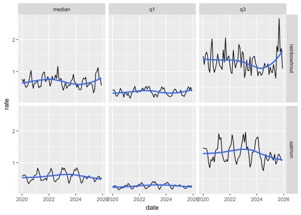
# Conclusions:
# Rainbow trout appears to have a 2-year cycle, while salmon has a 3-year cycle
# Rainbow trout shows a slight upward trend, while salmon shows a slight downward trend
# Mortality rates are very low, so it is difficult to judge whether the magnitude of change
# is large or small; we will standardize the data and re-evaluate
# 结论：
# 虹鳟似乎以2年为一个周期，而三文鱼以3年为一个周期
# 虹鳟大体上呈略微上升趋势，而三文鱼呈略下降趋势
# 死亡率是很低的数字，目前难以判断变化幅度是大还是小，标准化数据后再做判断# Re-observe month-to-month mortality trends after standardizing the data
# Due to large differences in extreme values, use MAD (median absolute deviation) to compute
# standard deviation
# 对数据标准化后再重新观察月份-死亡率趋势
# 由于极端值差异很大，采用mad函数计算标准差
mortality %>%
filter(geo_group=='country') %>%
select(species,date,median,q1,q3) %>%
gather(key='index',value='rate',-species,-date) %>%
group_by(species,index) %>%
mutate(zrate=(rate-median(rate,na.rm=T))/mad(rate,na.rm=T)) %>%
ggplot(aes(x=date, y=zrate)) +
geom_line() +
geom_smooth(se=F) +
scale_x_date(date_breaks='1 year',date_labels='%Y') +
facet_grid(species~index)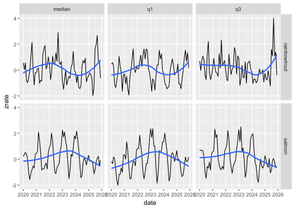
# Conclusions:
# 1) The conclusions after standardization are consistent with the raw data
# Standardized fluctuations are generally within 1 standard deviation; I believe the overall
# national mortality trend is not large
# 2) However, month-to-month volatility is large (sometimes exceeding 2 standard deviations),
# indicating that mortality is significantly affected by seasonal factors
# 3) Salmon shows a clearer seasonal pattern: the highest mortality of the year occurs around
# March each year, except for 2025, which had very low mortality throughout the year
# 4) Rainbow trout has a less obvious seasonal pattern and larger volatility, but generally
# the highest mortality of the year occurs around July
# Besides seasonal factors, rainbow trout mortality is also affected by other factors
# 5) Additionally, rainbow trout showed extremely high extreme values (Q3) in the second half
# of 2025 (opposite to salmon), perhaps due to abnormal weather or other events
# 结论：
# 1）标准化数据后的结论与原始数据一致
# 标准化后的上下波动大体在1个标准差以内，我认为国家整体的死亡率变化趋势不大
# 2）但是月度之间的波动率还是大的（有时甚至超过2个标准差），说明死亡率受到季节因素的显著影响
# 3）三文鱼的季节规律更明显，每年的3月份前后是全年死亡率最高点。但2025年例外，全年死亡率很低
# 4）虹鳟的季节规律不如三文鱼明显且波动更大，但基本上存在每年7月前后是全年死亡率最高点的规律
# 虹鳟的月能度死亡率可除了季节因素外，还受其它因素影响。
# 5）另外，虹鳟在2025年下半年甚至出现极值（Q3）特别高的现象（与三文鱼相反），或许天气反常或发生其它事件Impact of season on mortality(季节对死亡率的影响)
Further analyze whether certain seasons have higher/lower mortality
进一步分析一年中是否某些季节有更高/更低的死亡率
# Further analyze the impact of seasonal factors on mortality
# Quarters: 1-3/4-6/7-9/10-12 for both species
# Unsure whether mean or median is more appropriate, so I observe both indicators
# 进一步分析季节因素对死亡率的影响
# 其中：两种鱼均以1-3/4-6/7-9/10-12为季度划分
# 另外，不确定均值和中位数哪个更合适，两个指标均作观察
mortality %>%
filter(geo_group=='country') %>%
select(species,date,median,q1,q3) %>%
gather(key='index',value='rate',-species,-date) %>%
mutate(month=month(date),
season=case_when(month<=3~1,month<=6~2,month<=9~3,month<=12~4,T~NA)) %>%
group_by(species,index,season) %>%
summarise(mrate=mean(rate,na.rm=T),
zrate=median(rate,na.rm=T),
.groups='drop') %>%
gather(key='type',value='rate',-species,-index,-season) %>%
ggplot(aes(x=season,y=rate,color=type)) +
geom_line() +
geom_point() +
facet_grid(species~index)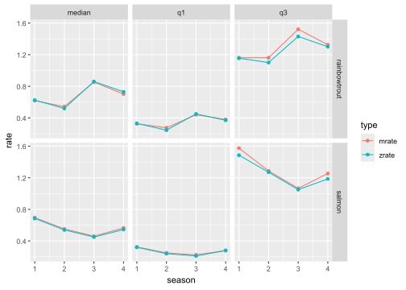
# Conclusions:
# Seasonal factors do affect mortality
# Rainbow trout: highest mortality in Q3, followed by Q4; lowest in Q2, followed by Q1
# Salmon: opposite; lowest mortality in Q3, highest in Q1
# Additionally, mean and median results are very close
# 结论：
# 季节因素确实会影响死亡率
# 虹鳟：三季度死亡率最高，四季度次之；而二季度死亡率最低，一季度次之
# 三文鱼：恰好相反，三季度死亡率最低；而一季度最高
# 另外，均值与中位数的结果非常接近County-level mortality(县的死亡率情况)
After analyzing the national level, now examine differences among counties
Focus on county data, not area data
分析完国家层面的概况后，现在分析各县的差异
主要聚焦于县的数据，而未分析区域
First analyze rainbow trout(先分析虹鳟)
# Whether there are significant differences in rainbow trout mortality among counties
# 各县虹鳟死亡率是否有显著差异
mortality %>%
filter(geo_group=='county', species=='rainbowtrout') %>%
select(date,region,median,q1,q3) %>%
gather(key='index',value='rate',-date,-region) %>%
ggplot(aes(x=date,y=rate,color=region)) +
geom_line() +
scale_x_date(date_breaks='1 year', date_labels='%Y') +
coord_cartesian(ylim=c(NA,5)) +
facet_wrap(~index) +
theme(legend.position='top')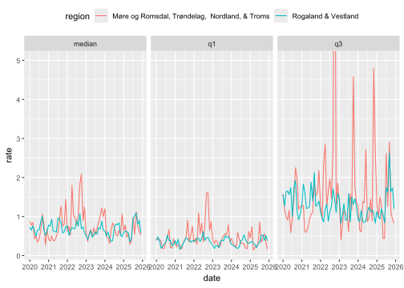
# Conclusions:
# 1) Rainbow trout is only present in two counties: More og Romsdal and Rogaland
# Both counties follow the overall pattern: high mortality in Q3-Q4, low in Q1-Q2
# 2) There may have been an abnormal event in the second half of 2022 (especially Q3) with
# particularly high mortality
# Mortality was also high around March 2022
# 3) Rogaland has smaller volatility, while More og Romsdal has larger volatility, showing
# significant regional differences
# The national amplitude and peaks for rainbow trout are likely driven by More og Romsdal
# 4) Additionally, Rogaland has only rainbow trout and no salmon, which may indicate an
# advantage in salmon farming
# 结论：
# 1）虹鳟仅有More og Romsdal和Rogaland两个县
# 两个县与整体规律一致：3-4季度死亡率高，而1-2季度低
# 2）2022年下半年（特别是3季度）可能有异常事件，死亡率特别高
# 2022年3月份前后，死亡率也比较高
# 3）Rogaland的波动率比较小，而More og Romsdal波动比较大，显示出地域区别大
# 全国性的虹鳟波动幅度及峰值大概率由More og Romsdal导致
# 4）另外Rogaland只有虹鳟而没有三文鱼，或许在养殖鲑鱼方面有优势Then analyze salmon(再分析三文鱼)
# Observe whether there are significant differences in salmon mortality among counties
# 观察各县的三文鱼死亡率是否有显著差异
mortality %>%
filter(geo_group=='county', species=='salmon') %>%
select(date,region,median,q1,q3) %>%
gather(key='index',value='rate',-date,-region) %>%
ggplot(aes(x=date,y=rate)) +
geom_line() +
scale_x_date(date_breaks='1 year', date_labels='%Y') +
coord_cartesian(ylim=c(NA,5)) +
facet_grid(region~index)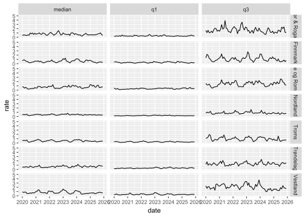
# Conclusions:
# County mortality is generally stable (low volatility) and mostly in the 0-1% range
# However, there are some differences among counties:
# 1) Nordland has very stable and low mortality (0.5%), and even its extreme values (Q3) are
# very stable and low; this county has unique advantages in salmon farming
# 2) Troms has relatively stable mortality (but higher than Nordland) and low (around 0.5%)
# 3) Finnmark is unstable: very low (0.25%) at times, up to about 1% at others, fluctuating
# around 0.5% with relatively large variation
# 4) Vestland is generally around 1% with considerable volatility (large Q3), making it the
# worst among all counties
# 5) Other counties (Agder & Rogaland, Møre og Romsdal, Trondelag) are basically in the
# 0.5%-1.0% range
# Additionally, More og Romsdal is poor for rainbow trout but average for salmon
# 6) Salmon mortality is lower than rainbow trout mainly because of the low mortality in
# Finnmark/Nordland/Troms (average only 0.5%)
# 结论：
# 各县死亡率大体稳定（波动不大）且基本维持在0-1%的范围
# 但各县的死亡率还是有一定差异的，具体为：
# 1）Nordland死亡率非常稳定且较低（0.5%），即使极值（Q3）也很稳定且低，该县在养殖三文鱼有得天独厚的优势
# 2）Troms死亡率相对稳定（但大于Nordland）且较低（0.5%上下）
# 3）Finnmark则不稳定，低的时候很低（0.25%），高的时候可达到1%左右，围绕0.5%波动但起伏相对较大
# 4）Vestland大体在1%上下波动，且波动率也不小（Q3较大），在所有县中相对较差
# 5）其它县（Agder & Rogaland、Møre og Romsdal、Trondelag）基本在0.5%-1.0%区间
# 另外，More og Romsdal在养殖虹鳟方面较差，但三文鱼处于中等位置
# 6）三文鱼死亡率低于虹鳟，主要是因为Finnmark/Nordland/Troms县死亡率较低（均值仅0.5%）Salmon mortality trends by county(各县三文鱼的死亡率趋势)
# Month-to-month mortality trend for salmon by county
# 各个县三文鱼的月份-死亡率趋势
mortality %>%
filter(geo_group=='county', species=='salmon') %>%
select(date,region,median) %>%
ggplot(aes(x=date,y=median)) +
geom_line() +
scale_x_date(date_breaks='1 year', date_labels='%Y') +
facet_grid(region~.)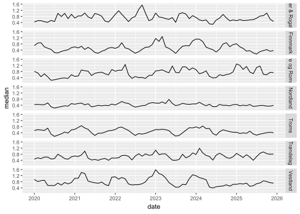
# Conclusions:
# Except for Agder & Rogaland, the upward/downward trends are similar across counties
# Other counties generally have high mortality in Q1 and low in Q3
# (consistent with national pattern)
# Agder & Rogaland, however, shows the opposite trend in most years
# 结论：
# 除Agder & Rogaland外，其它县的上升/下降趋势大体一致
# 其它县大体是一季度死亡率高、三季度低（与全国一致）
# 而Agder & Rogaland在大多年份却有着相反的趋势Impact of seasonal factors on mortality(季节因素对死亡率的影响)
# Summarize salmon mortality by quarter for each county
# 按季度汇总每个县三文鱼的死亡趋势
mortality %>%
filter(geo_group=='county', species=='salmon') %>%
select(region,date,median,q1,q3) %>%
gather(key='index',value='rate',-region,-date) %>%
mutate(month=month(date),
season=case_when(month<=3~1,month<=6~2,month<=9~3,month<=12~4,T~NA)) %>%
group_by(region,index,season) %>%
summarise(mrate=mean(rate,na.rm=T),
zrate=median(rate,na.rm=T),
.groups='drop') %>%
gather(key='type',value='rate',-region,-index,-season) %>%
ggplot(aes(x=season,y=rate,color=type)) +
geom_line() +
geom_point() +
facet_grid(region~index)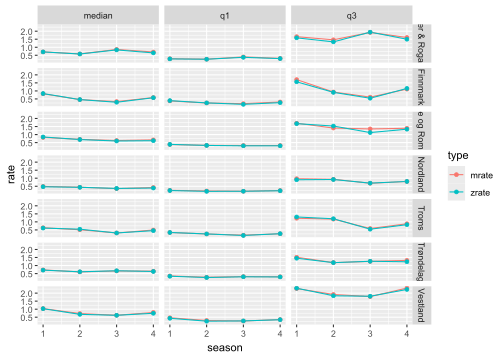
# Conclusions:
# 1) Confirmed: most counties have highest mortality in Q1 and lowest in Q3, with three
# exceptions:
# 2) Agder & Rogaland: Q3 mortality is even higher than Q1, the only county with an opposite
# trend; may have encountered special circumstances in Q3
# 3) Trondelag and Nordland have very similar mortality across all four seasons (but do not
# violate the overall trend)
# 结论：
# 1）确认：大部分县一季度死亡率最高，而三季度最低，但有3个例外：
# 2）Agder & Rogaland的三季度死亡率甚至高于1季度，唯一趋势相反的县，可能三季度遇到特殊情况
# 3）Trondelag、Nordland一年四季的死亡率都非常接近（但并未违反整体趋势）Answer questions 1 and 2(回答问题1和2)
- Mortality rates for both species are generally between 0-1%, with no significant trend change; annual fluctuations are not large
- Rainbow trout has higher mortality than salmon and shows larger variability
- Rainbow trout and salmon have different mortality patterns and must be discussed separately: Rainbow trout: highest mortality in Q3, lowest in Q2; Salmon: lowest mortality in Q3, highest in Q1
- Only two counties farm rainbow trout in Norway (More og Romsdal & Vestland), among which Rogaland & Vestland farm only rainbow trout, while More og Romsdal also farms salmon
- Rogaland & Vestland have an advantage in farming rainbow trout, with stable mortality slightly above 0.5% (the low salmon counties have 0.5%), in the 0.5%-1.0% range
- More og Romsdal may have had special circumstances in 2022 (especially July and March) with higher mortality; its volatility in other years is also higher than Rogaland & Vestland
- Seven counties farm salmon; most have low mortality in Q3 (opposite to rainbow trout) and highest in Q1
The only exception is Agder & Rogaland, where Q3 mortality is often higher than Q1 in most years, possibly due to non‑seasonal factors
- Nordland and Troms have low mortality and small variability; Vestland has high mortality and large variability
- More og Romsdal is poor for rainbow trout but achieves an average level for salmon
- Additionally, most counties had slightly higher mortality in Q1 of 2023 and 2024 compared to other years
1）两种鱼的是死亡率大体在0-1%之间，且趋势并未改变，每年的死亡率波动幅度不算大
2）虹鳟死亡率高于三文鱼，且波动相对更大
3）虹鳟与三文鱼有不同的死亡率模式，死亡规律需分开讨论：
虹鳟三季度死亡率最高，二季度最低；而三文鱼三季度死亡率最低，一季度最高
4）挪威养殖虹鳟只有2个县（More og Romsdal & Vestland)，其中Rogaland & Vestland仅养殖虹鳟，而More og Romsdal还同时养殖了三文鱼
5）Rogaland & Vestland养殖虹鳟是有优势的，死亡率较平稳，略高于0.5%（三文鱼死亡率低的县为0.5%），处于0.5%-1.0%
6）More og Romsdal在2022年（特别是7月和3月）可能有特殊情况，死亡率比较高；其它年份波动率也高于Rogaland & Vestland
7）养殖三文鱼则有7个县，大体都是三季度死亡率低（与虹鳟相反），一季度最高 唯一例外的是Agder & Rogaland县，其大部分年份的三季度死亡率反而高于一季度，可能受到其它非季节因素的影响
8）Nordland和Troms的死亡率较低且波动幅度较小；而Vestland死亡率偏高且波动较大
9）More og Romsdal养殖虹鳟不理想，但三文鱼能达到中游水平
10）另外，大部分县在2023年及2024年1季度死亡率略微高于其它年份
Composition of losses(损失的构成)
Besides fish mortality, what other types of losses may have a significant impact?
除了鱼类死亡外，还有哪些类型的损失可能带来重大影响？
National loss composition(国家的损失构成)
# Loss data: factorize species and region fields
# 损失数据：物种、区域因子化
loss %<>%
mutate(species=factor(species),
geo_group=factor(geo_group),
region=factor(region))
# National loss composition, by species
# 国家整体的损失构成，区分两种鱼
loss %>%
filter(geo_group=='country') %>%
group_by(species) %>%
summarise(dead=sum(dead, na.rm=T),
discarded=sum(discarded, na.rm=T),
escaped=sum(escaped, na.rm=T),
other=sum(other, na.rm=T)) %>%
gather(key='type', value='value', -species) %>%
ggplot(aes(x=1,y=value, fill=type)) +
geom_bar(stat='identity') +
coord_polar(theta='y') +
facet_wrap(~species, scale='free_y')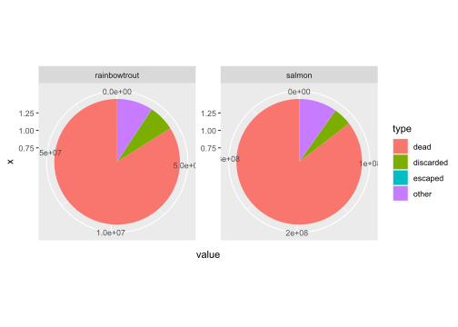
# Conclusions:
# Besides mortality, "other" and "discarded" are the main causes of losses
# The loss structures for the two species appear similar; confirm with actual numbers
# 结论：
# 除了死亡外，其它及丢弃是造成损失的其它主要原因
# 两种鱼的损失结构似乎差不多，通过具体数值再确认下# detail data
# 具体数值
loss %>%
filter(geo_group=='country') %>%
group_by(species) %>%
summarise(losses=sum(losses, na.rm=T),
dead=sum(dead, na.rm=T),
discarded=sum(discarded, na.rm=T),
escaped=sum(escaped, na.rm=T),
other=sum(other, na.rm=T)) %>%
mutate(dead=dead/losses,
discarded=discarded/losses,
escaped=escaped/losses,
other=other/losses) %>%
select(-losses)# A tibble: 2 × 5
species dead discarded escaped other
<fct> <dbl> <dbl> <dbl> <dbl>
1 rainbowtrout 0.840 0.0672 0.000877 0.0923
2 salmon 0.855 0.0472 0.000323 0.0978# Conclusions:
# Numerically, the loss structures for the two species are similar; they can be
# considered together
# 结论：
# 从数值上看，两种鱼的损失结构相近，可以考虑合并在一起讨论Temporal factors in loss composition(损失构成的时间因素)
# Relationship between loss composition and time at the national level
# 国家层面，损失构成与时间的关系
loss %>%
filter(geo_group=='country') %>%
group_by(species, date) %>%
summarise(losses=sum(losses, na.rm=T),
dead=sum(dead, na.rm=T),
discarded=sum(discarded, na.rm=T),
escaped=sum(escaped, na.rm=T),
other=sum(other, na.rm=T)) %>%
mutate(dead=dead/losses,
discarded=discarded/losses,
escaped=escaped/losses,
other=other/losses) %>%
select(-losses) %>%
gather(key='type', value='value', -date,-species) %>%
ggplot(aes(x=date, y=value, fill=type)) +
geom_bar(stat='identity') +
scale_x_date(date_breaks='1 years', date_labels='%Y') +
facet_wrap(~species, scale='free_y')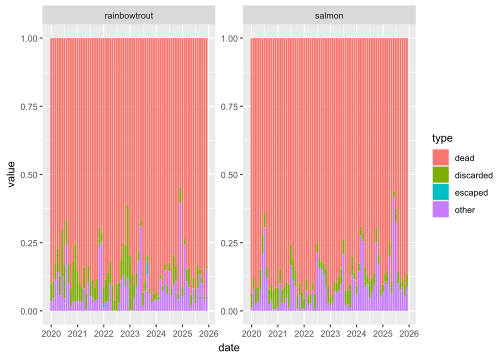
# Conclusions:
# "Other" and "discarded" are the two main non‑mortality loss causes, but no clear temporal
# pattern is visible
# 结论：
# 其它、丢弃是造成损失的两大其它原因，但看不出跟时间的规律Loss composition by area(各区域的损失构成)
# Relationship between farming area and losses
# 养殖区域跟损失的关系
loss %>%
filter(geo_group=='area') %>%
group_by(region, date) %>%
summarise(losses=sum(losses, na.rm=T),
dead=sum(dead, na.rm=T),
discarded=sum(discarded, na.rm=T),
escaped=sum(escaped, na.rm=T),
other=sum(other, na.rm=T)) %>%
mutate(dead=dead/losses,
discarded=discarded/losses,
escaped=escaped/losses,
other=other/losses) %>%
select(-losses) %>%
gather(key='type', value='value', -date,-region) %>%
ggplot(aes(x=date, y=value, fill=type)) +
geom_bar(stat='identity') +
scale_x_date(date_breaks='2 years', date_labels='%Y') +
facet_wrap(~region)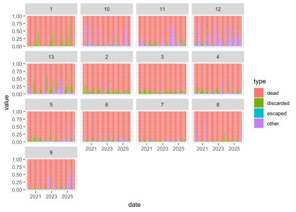
# Conclusions:
# Loss patterns vary greatly by region
# Area 1: very special, almost entirely discarded, with a peak every two years
# Areas 2, 3: discarded dominates, relatively uniform across months
# Areas 7, 8: also dominated by discarded, but some months are dominated by other
# Areas 5, 9: shifted from discarded in the past to other later
# Areas 10, 11, 12, 13: other dominates
# Other areas: roughly half discarded and half other
# 结论：
# 不同区域损失规律差异较大
# 1区：相当特殊，几乎都是丢弃，且每2年出现一个高峰
# 2区、3区：丢弃为主导，且各月相对均匀
# 7区、8区：也以丢弃为主导，但个别月份以其它为主导
# 5区、9区：由过往丢弃主导，转变为后来的其它为主导
# 10区、11区、12区、13区：其它为主导
# 其它区：丢弃和其它各种一半左右的比例Loss composition by county(各镇的损失构成)
# Relationship between county and losses
# 镇跟损失的关系
loss %>%
filter(geo_group=='county') %>%
group_by(region, date) %>%
summarise(losses=sum(losses, na.rm=T),
dead=sum(dead, na.rm=T),
discarded=sum(discarded, na.rm=T),
escaped=sum(escaped, na.rm=T),
other=sum(other, na.rm=T),
.groups='drop') %>%
mutate(dead=dead/losses,
discarded=discarded/losses,
escaped=escaped/losses,
other=other/losses) %>%
select(-losses) %>%
gather(key='type', value='value', -date,-region) %>%
ggplot(aes(x=date, y=value, fill=type)) +
geom_bar(stat='identity') +
scale_x_date(date_breaks='2 years', date_labels='%Y') +
facet_wrap(~region)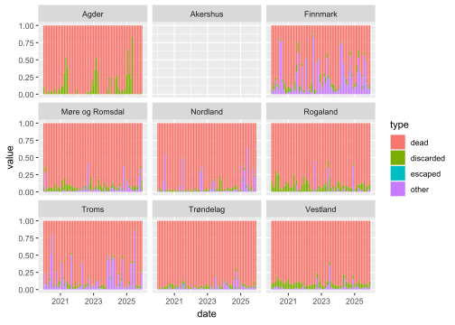
# Conclusions:
# Large variation among counties
# Agder & Rogaland: very special, pattern almost identical to Area 1; suggests Area 1 largely
# overlaps with this county
# Rogaland & Vestland, Vestland: discarded dominates
# Finnmark, Troms: other dominates
# Akershus: all zeros, possibly missing data
# Other counties: both discarded and other, but when other is present, it often dominates
# 结论：
# 各镇差异较大
# Agder & Rogaland：相当特殊，规律与1区几乎一致，推测1区与该镇高度重叠
# Rogaland & Vestland、Vestland：丢弃占主导
# Finnmark、Troms：其它占主导
# Akershus：全部为0, 有可能数据缺失
# 其它镇：丢弃和其它均有，但如果存在其它时，往往其它占主导Answer question 3(回答问题3)
- “Other” and “discarded” are the second and third largest causes of losses, respectively
There is a need to further investigate what exactly causes the losses classified as “other”
- However, loss composition varies greatly among regions
1）其它、丢弃分别是造成损失的第二、第三大原因
有需要进一步研究“其它”所造成的损失究竟是什么原因
2）各地区之间的损失构成差异较大